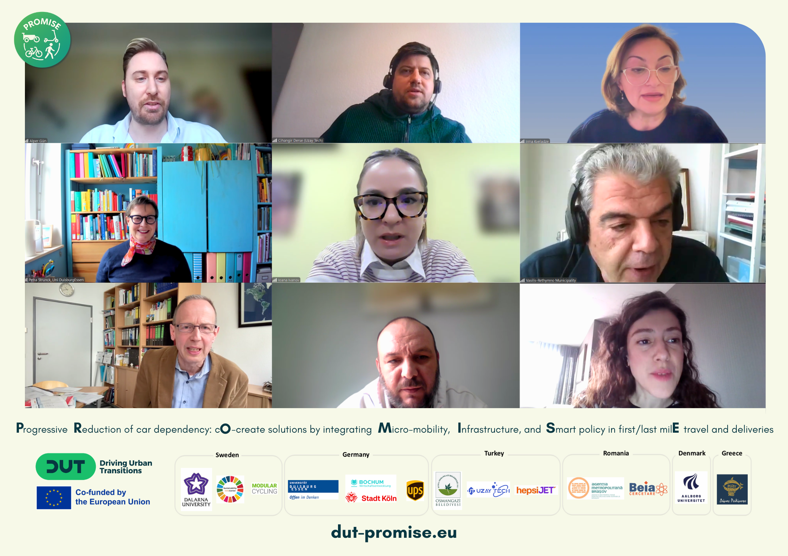

Events
From informal conversations in the Urban Lunch Talks webinar series to policy conferences, PROMISE events bring together stakeholders to exchange knowledge, build capacity and drive sustainable urban transitions.
2026
The full PROMISE consortium comes together in Brașov for two days of focused progress review and collaborative planning. WP leaders from WP1 to WP4 will share focused updates, followed by joint discussion on dependencies and bottlenecks. City partners will present their data, challenges and expectations in a dedicated dialogue session. An interactive Living Lab requirements workshop will define and prioritize essential components, while a guided site visit grounds the work in real-world mobility observations across the city. The meeting closes with final alignment on WP timelines, milestones and priority actions for the year ahead.
2025
For the second coordination meeting, the PROMISE team gathered at Universität Duisburg-Essen for two days of focused collaboration. The agenda featured partner presentations and WP updates, dedicated workshops for WP2 (Intervention Framework and Behavioral Transformation Guidebook) and WP3 (Micro-mobility Decision Support Tool), and action planning for the year ahead. The team also connected over a guided tour of the UNESCO World Heritage Site Zollverein. Structured sessions and hands-on workshops helped the team align on priorities and define concrete next steps for the living labs and co-creation processes.

Last March, PROMISE officially kicked off. Researchers, urban planners, and AI specialists from across Europe came together for our launch meeting, sharing one goal: to reduce car dependency in European cities. Working on the 15-minute city concept, the project co-creates solutions with cities, tests them in real-world living labs, and builds tools that help planners make evidence-based decisions about micro-mobility infrastructure. Over three years, PROMISE combines research, technology, and collaboration to tackle one of urban planning's toughest challenges: how do we move people efficiently while keeping our cities livable, sustainable, and inclusive?